Fluent Conveyors
Turning a support-heavy aftermarket into a self-serve platform. We designed the multi-tenant customer portal that moved Fluent’s parts, service and maintenance business off phone calls and PDFs and online.
Visit Fluent Conveyors ↗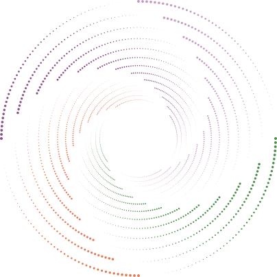
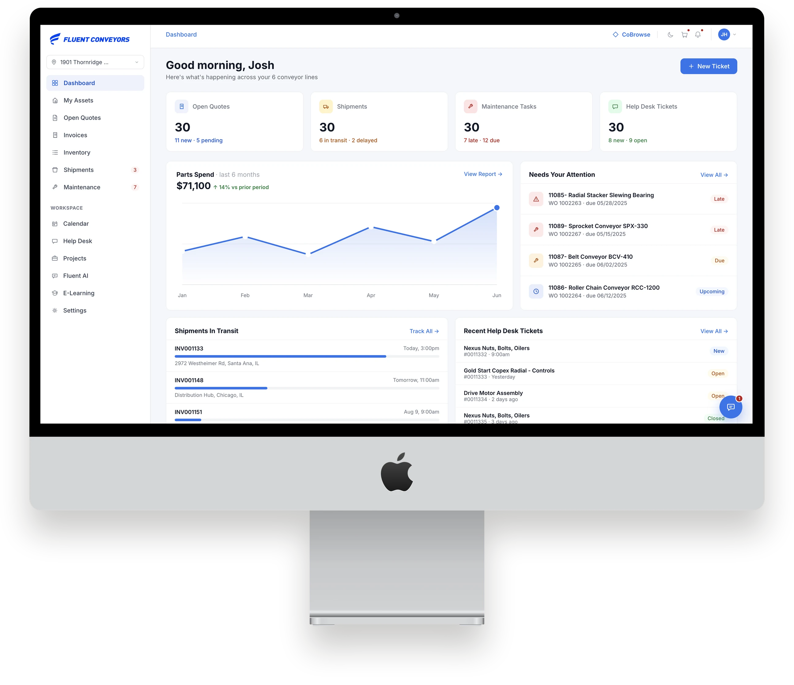
Fluent engineers and manufactures heavy-duty conveyors for recycling and waste facilities, where a line that stops costs money every minute.
A conveyor sells once and is serviced for a decade. Parts, service and maintenance are the revenue that lasts, and all of it was moving through inboxes, phone calls and printed PDFs. Fluent wanted that aftermarket to run as a product, without adding headcount for every new account.
The aftermarket was the business. Manual process was the tax on it.
Every quote, status check and reorder went through a dealer. That capped how many accounts a fixed team could serve, and handed the relationship to whoever answered the phone fastest.
We started on the plant floor, not in Figma.
Six phases, from research to delivery, with every design goal written against the business number it had to move.
- 01ResearchInterviews, field visits and the problem as users live it
- 02DefinePersonas, journey maps and goals tied to metrics
- 03IdeateInformation architecture, roles and permissions, wireframes
- 04DesignThe high-fidelity platform and its visual system
- 05TestUsability sessions on the activation path
- 06DeliverDesign system and specification for engineering
“Getting a quote is three emails and a day of waiting. By the time it’s signed, the line’s already been down too long.”
“Customers call me to ask where their shipment is. I’m a salesperson, I’m just forwarding tracking numbers all day.”
Quote-to-cash, anchored to the asset.
Each customer’s machines are the home base. Parts, quotes, payment, shipping and service all branch from the asset, so the loop that used to take a week of email closes inside one product.
Every line, and every part that fits it.
Operators see each conveyor line with its health, status and next service date. Opening a machine shows its uptime, maintenance status and a parts list stated as compatible with that exact machine, so the right part is found first time.
- Searchable parts catalogue per asset
- Add to cart, raise a ticket or log a task in context
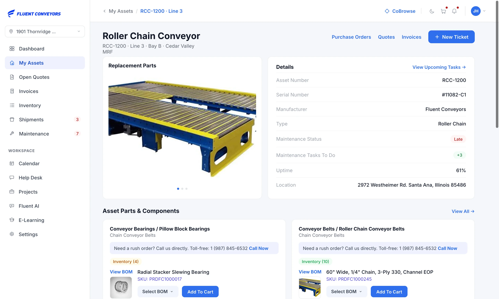
A cart that becomes a signed order.
Conveyor parts are made to order and freight varies, so the cart sends a quote request to the dealer instead of checking out. The customer keeps a running estimate, then reviews the priced quote and e-signs it in the same place.
- Parts grouped by the asset they belong to
- Line items, bill-to and ship-to, then sign and accept
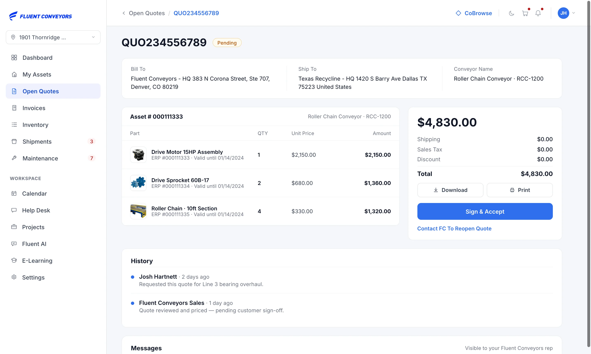
Invoice, payment and delivery in one flow.
Customers pay by card or on purchase-order terms, then follow the shipment from order to delivery with carrier, ETA and every scan. “Where is it?” stops being a phone call to the dealer.
- Pay by card or PO terms in the portal
- Order → processing → in transit → delivered
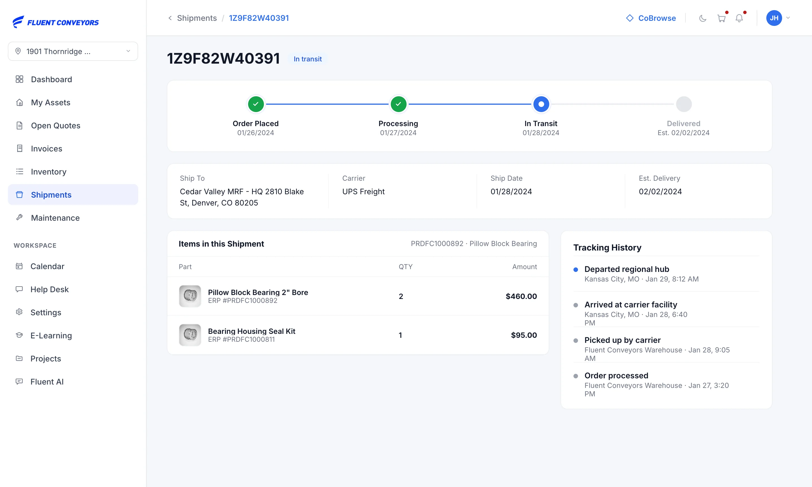
Get ahead of downtime.
Work orders are grouped into late, due and upcoming, so teams service equipment before it fails. Tickets can be raised from any asset and keep the full support thread linked to the machine, part and work order.
- Late, due and upcoming at a glance
- Completed tasks log back to the asset’s history
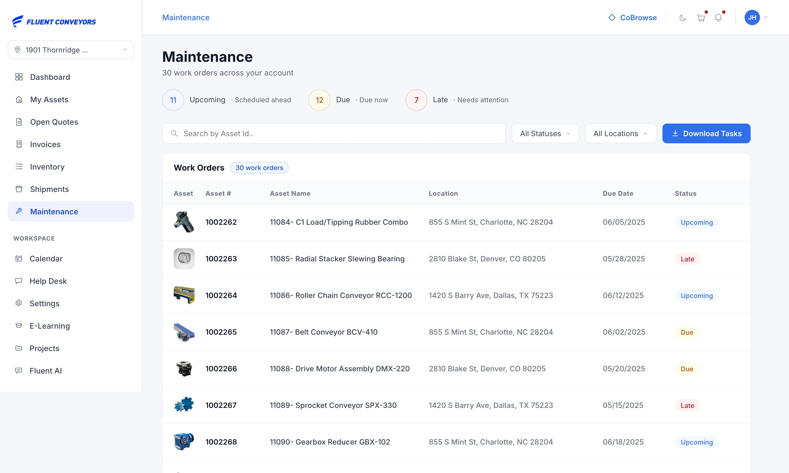
Tools that make the portal the first place people look.
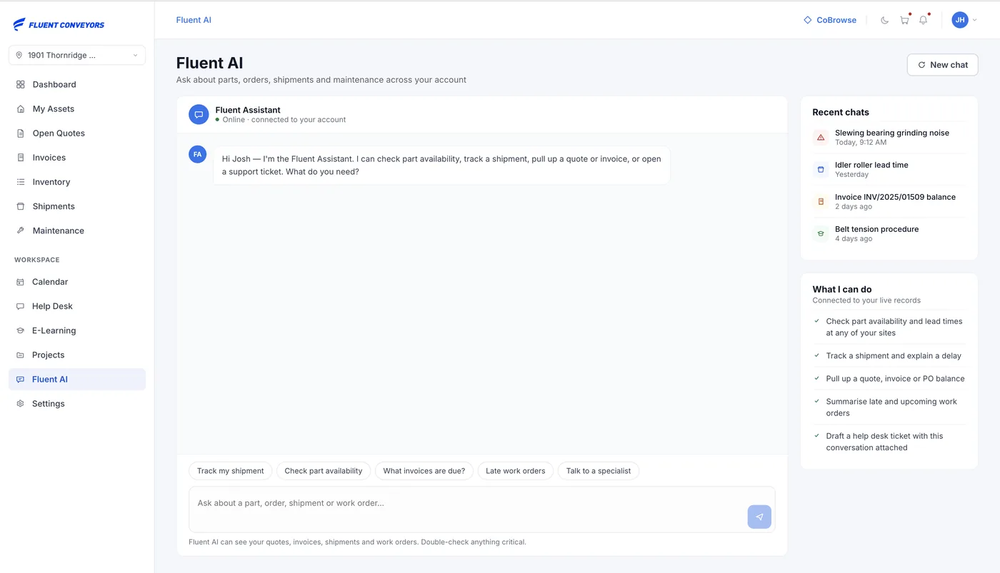
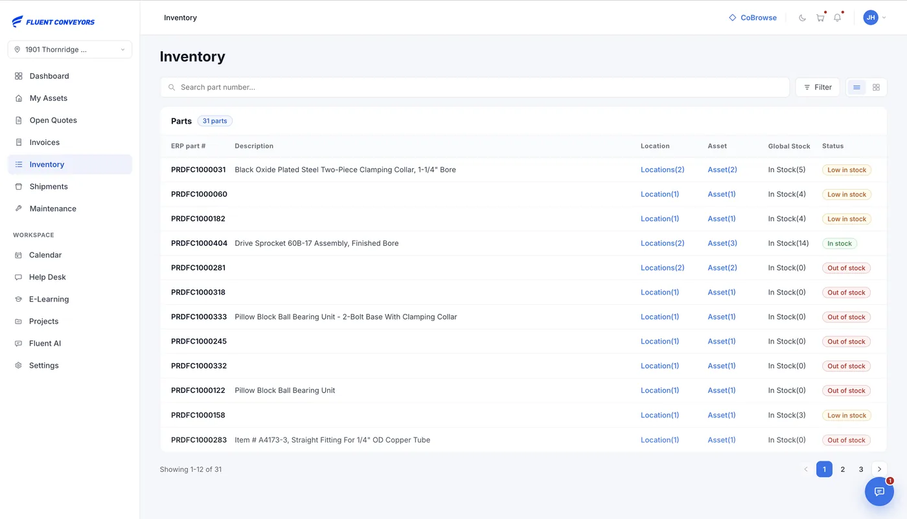
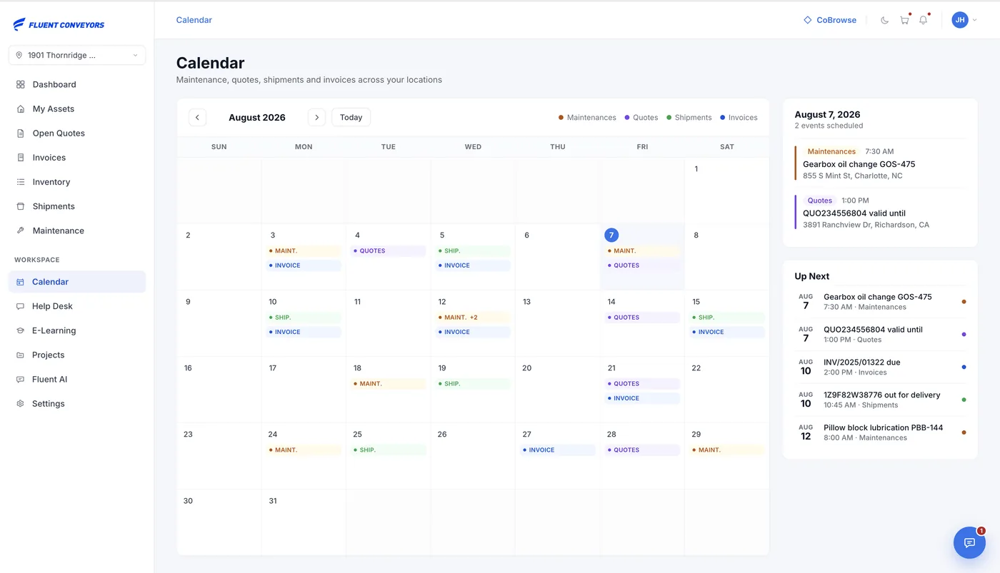
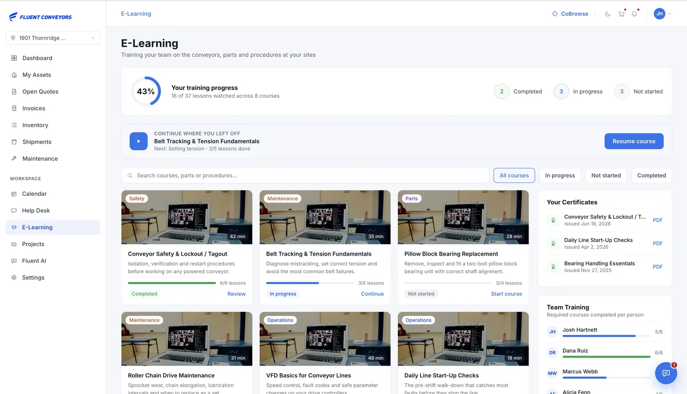
The person who uses it isn’t the person who buys it.
We designed the tenancy and permissions model explicitly, before the screens, so self-serve never meant uncontrolled spend or leaked data.
We tested the path to first value, not the pixels.
Adoption was the real risk: a portal nobody logs into changes nothing. Operators and dealers worked through find a part, get a quote, sign, pay and track on a clickable prototype. 8 participants, 5 tasks, 88% completion, 5 issues fixed before engineering handoff.
Cart → quote felt like a dead end. We added a persistent “Request quote” summary with a clear primary action on the cart.
E-signature was missed. Signing became an explicit step with inline sign-and-accept before an order can be placed.
Maintenance status read as decoration. Overdue items moved to the dashboard with count badges and a direct link to schedule.
Part-to-asset link unclear. The catalogue moved inside each asset, with compatibility labelled explicitly.
A manual aftermarket, turned into a product.
Fluent now has something it never had: a system of record for the customer relationship between purchases. The platform is designed to move the three numbers Fluent’s leadership judges it on.
Every quote request, payment and shipment check that happens in the portal is one that no longer lands on a dealer.
Compatibility is stated per asset and the cart is a quote request, so the fastest route to the right part is Fluent’s own.
Service history and maintenance schedules living in Fluent’s product are what make a service contract renewable.
More projects
All projects →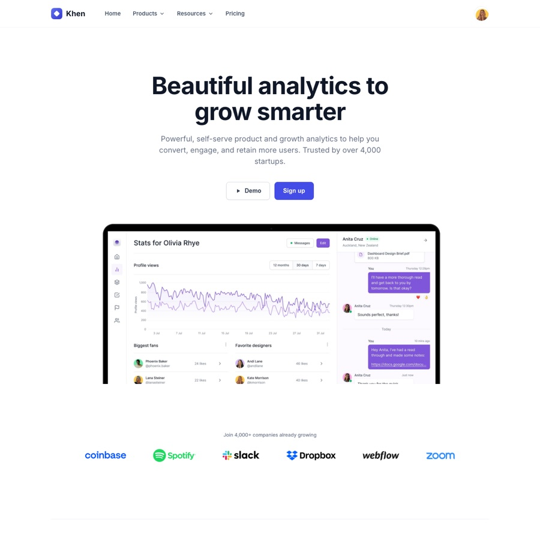
Khen Analytics
Beautiful analytics landing: hero dashboard, features, FAQ and CTA.
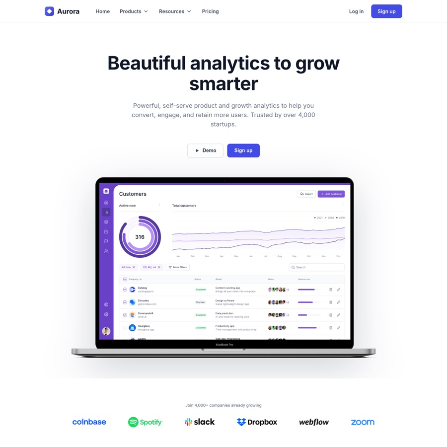
Aurora Analytics
Blue analytics landing: hero dashboard, feature blocks, integrations and CTA.
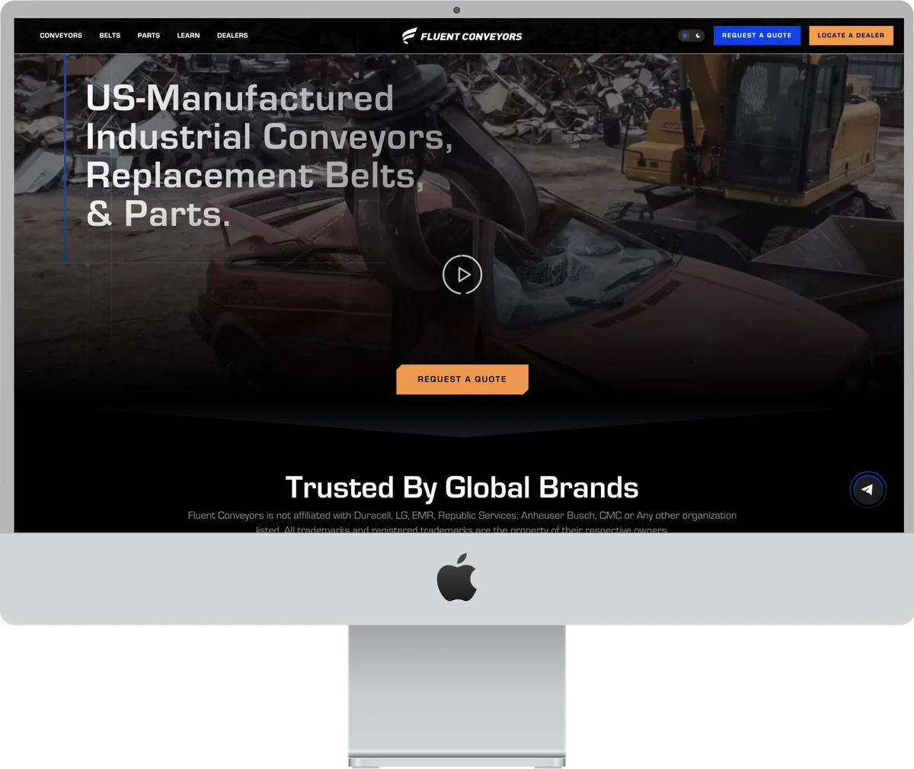
Fluent Conveyors website
Marketing and sales website that takes industrial buyers from choosing a conveyor to requesting a quote.